TURN IN - Geocoding Addresses with locator.stanford.edu and OpenRefine
Overview
This exercise introduces geocoding with OpenRefine and Stanford's locator.stanford.edu service. You will start with a CSV table of street addresses, build a web API request, use OpenRefine to send one request per row, and extract longitude and latitude values from the returned JSON.
Concept note: Geocoding is the process of turning a place description, such as a street address, into map coordinates. The result is usually a pair of longitude and latitude values that can be used to create point geometry in GIS software.
What You Should Understand After This Lab
By the end of this exercise, you should be able to explain:
- what a geocoding API does
- why an address table must have consistent address fields before geocoding
- how a URL can carry query parameters to a web service
- why API responses are often returned as JSON
- how OpenRefine can repeat a web request across many table rows
Getting Ready
Data
Download the data for this exercise, here (you may need to File>Save As... if your browser opens the csv, rather than downloading it ).
https://raw.githubusercontent.com/mapninja/Earthsys144/master/data/SantaClara_TattooParlors.csv
Download and Install OpenRefine
https://openrefine.org/download
This exercise will demonstrate how to use OpenRefine to submit URLs to web-based Geocoding APIs in order to augment an existing dataset with things like latitude & longitude coordinates, elevation values, drive times, etc…
OpenRefine is a piece of open-source software that allows you to manipulate data in many different ways. It’s not just great for geocoding and augmenting datasets, but is also really great for cleaning up ‘dirty’ data.
For the needs of this exercise, OpenRefine allows us to build and submit URLs to a web service (like a geocoding API) over and over tens, hundreds, even thousands or more times, saving us the trouble of typing a URL into a browser and copy & pasting values, one at a time. OpenRefine runs in your browser, but does so locally by installing itself as a sort of server running on your own machine. OpenRefine used to be called GoogleRefine, but has recently been re-branded, so much of the support materials you will find on-line will still refer to GoogleRefine.
You will need to download OpenRefine in order to complete this exercise. You can get the appropriate version for your operating system from OpenRefine.org. In the meantime, there are 3 videos on the OpenRefine front page. You should take a look at all three, because they give a great, concise overview of many of the capabilities of OpenRefine.
For the purposes of this exercise, it wouldn’t hurt to watch the 3rd video, linked here:
http://www.youtube.com/watch?feature=player_embedded&v=5tsyz3ibYzk
You might also want to take a look at this page on Expressions in OpenRefine:
https://docs.openrefine.org/manual/expressions
And, here’s the full User Manual:
What is a Geocoding API?
An API (Application Programming Interface) is, essentially, a set of instructions that allows computer programs to pass data back and forth. In the following exercise, we will be using a REST API, hosted by Stanford Libraries, at https://locator.stanford.edu.
Web APIs allow you to submit a URL just like when you type a URL into your browser address bar. The important difference is that the URL we are submitting has a bit of data, such as an address or coordinate pair, that we want to know something about. Rather than giving us back an HTML file that instructs our browser to retrieve images, text, and other objects and arrange them into a webpage, the web API we will use gives us back information about the address data we submit.
Concept note: A REST API is designed around URLs. The base part of the URL identifies the service, and the query parameters after the
?provide the specific inputs and options for a request.
Connecting to locator.stanford.edu Services
locator.stanford.edu is IP restricted to Stanford Network IP addresses, including VPN. If you find that you are unable to connect to the services, try using AnyConnect VPN to connect to the Stanford Network. If you are currently on the Stanford WiFi, or using a Stanford computer, on campus, you should be able to connect without issue.
Building your template Query
The easiest way for beginners to use APIs is to start by building a single URL query to quickly test that you have typed all of the parameters correctly and that https://locator.stanford.edu is returning valid data.
We'll be using the USA Street Address geocoding service. The service endpoint is a URL that you can submit your queries to. In this case, the USA Geocoder endpoint is at:
https://locator.stanford.edu/arcgis/rest/services/geocode/USA/GeocodeServer
This page will look rather terrifying to someone not yet familiar with these types of services, but fortunately, there is an easy way to get locator.stanford.edu to give us a endpoint URL we can begin altering to do what we want.
- Scroll to the bottom of the https://locator.stanford.edu/arcgis/rest/services/geocode/USA/GeocodeServer page and look for the Find Address Candidates link and click on it.
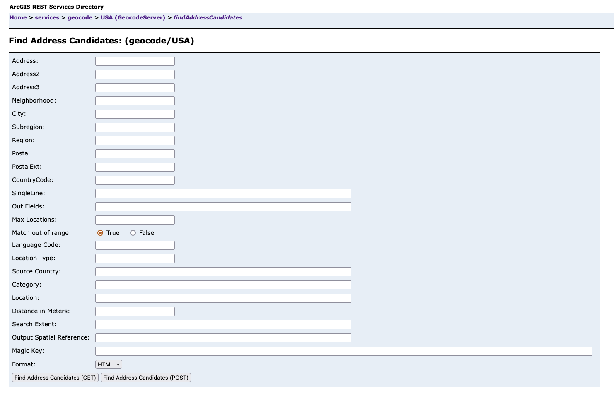
The Find Address Candidates: (geocode/USA) page provides a convenient way to build a template endpoint URL, by filling out the information in the form that duplicates the data we want to feed to the service.
- Now, examine the data we will feed into the APIs, at https://github.com/mapninja/Earthsys144/blob/master/data/SantaClara_TattooParlors.csv
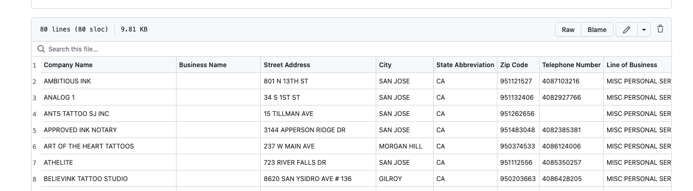
Note that we have several columns with Implicit Location Data in them, including:
Street AddressCityState AbbreviationZip CodeUse the values for these columns, from the first record in the table, to fill out the Find Address Candidates: (geocode/USA) form.
- For Max Locations:
1 - Change the Format dropdown to
JSON - Click Find Address Candidates (GET)
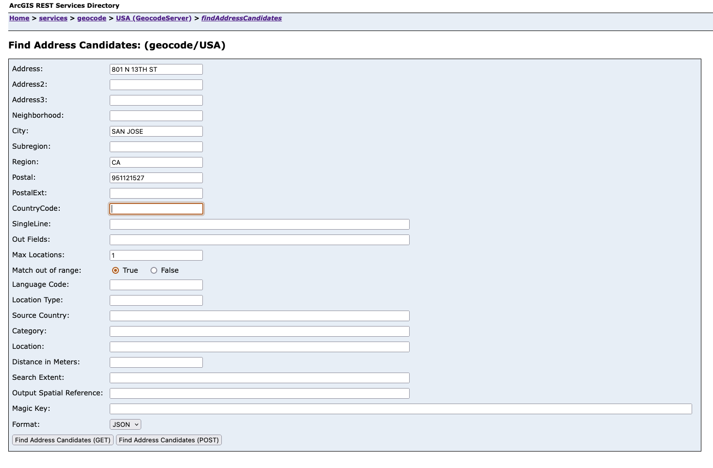
You should get TWO very important results.
First, you should get a plain text result, in JSON (JavaScript Object Notation) format:
{
"spatialReference": {
"wkid": 4326,
"latestWkid": 4326
},
"candidates": [
{
"address": "801 N 13th St, San Jose, California, 95112",
"location": {
"x": -121.8895229109295,
"y": 37.357328337757636
},
"score": 100,
"attributes": {
},
"extent": {
"xmin": -121.890754,
"ymin": 37.356155000000008,
"xmax": -121.88875399999999,
"ymax": 37.358155000000004
}
}
]
}
And second, you should get a endpoint URL in your browser's URL Bar:
https://locator.stanford.edu/arcgis/rest/services/geocode/USA/GeocodeServer/findAddressCandidates?Address=801+N+13TH+ST&Address2=&Address3=&Neighborhood=&City=SAN+JOSE&Subregion=&Region=CA&Postal=951121527&PostalExt=&CountryCode=&SingleLine=&outFields=&maxLocations=1&matchOutOfRange=true&langCode=&locationType=&sourceCountry=&category=&location=&distance=&searchExtent=&outSR=&magicKey=&f=pjson
Concept note: Query parameters are the
key=valuepieces after the?in a URL. In this example,City=SAN+JOSEtells the service which city value to use, andmaxLocations=1tells it to return only the best candidate.
Reading the endpoint URL
That's probably alot to take in, all at once, so let's break it down:
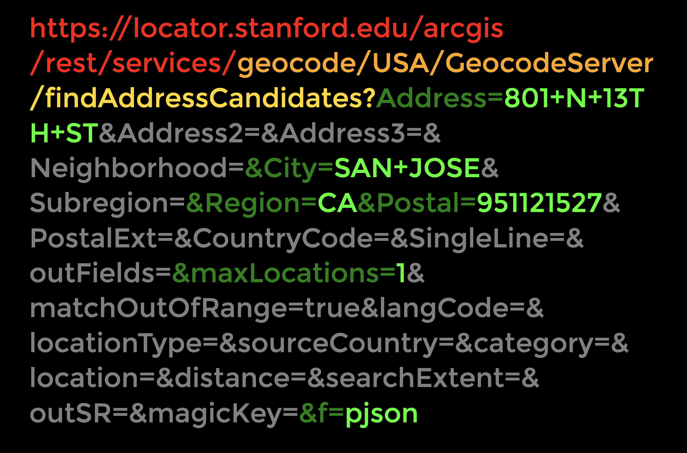
In the image, above, you can see the endpoint URL, broken down, as follows:
- Red - This is the
base URLof the locator.stanford.edu server - Orange - This is the
resource pathof the specific USA Geocode Service - Yellow - This is
resource pathof the specific Operation we want to run: "Find Address Candidates" - Green - These are the
query parameters, and theirvalues, commonly referred to as a "key-value"pair. They structure the data that we want to process, so that the locator service understands what it is being given to work with. - Gray - These are
query parameters, but they arekeyswith novalues. In most cases, it isn't necessary to include these in the URL
Creating the API endpoint URL
- Open up a Plain Text Editor of your choice (I like: Atom for MacOS, Notepad++ is a good one for Windows) and Cut&Paste the
endpoint URLinto the editor and delete thekey-pairswith novalues. You should end up with this:
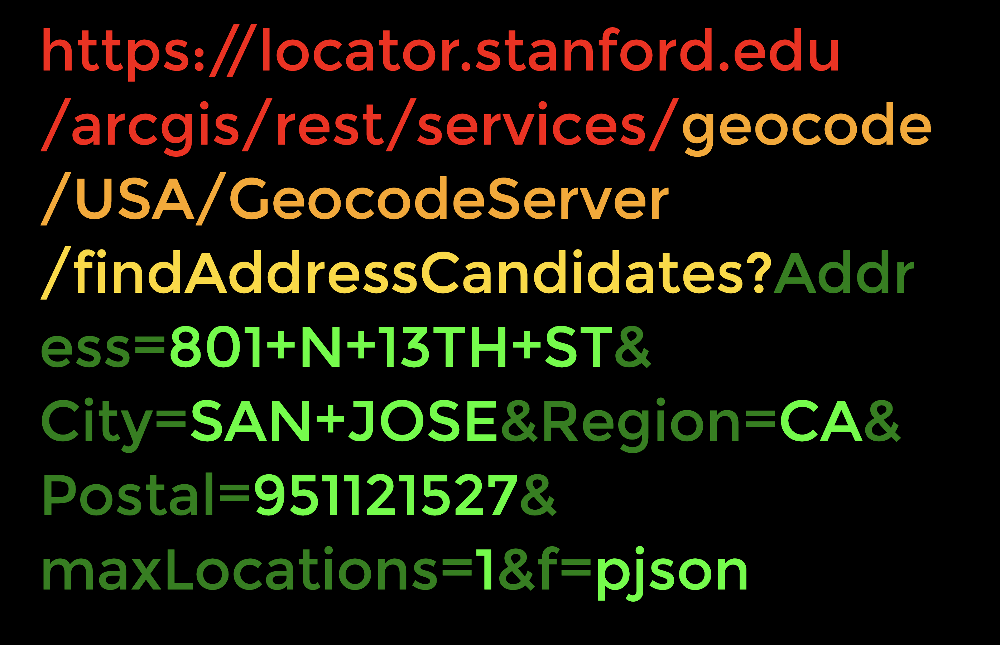
or:
https://locator.stanford.edu/arcgis/rest/services/geocode/USA/GeocodeServer/findAddressCandidates?Address=801+N+13TH+ST&City=SAN+JOSE&Region=CA&Postal=951121527&maxLocations=1&f=pjson
Testing your API endpoint URL
- Paste the new
endpoint URLinto your browser.
This should result in the same result as before.
{
"spatialReference": {
"wkid": 4326,
"latestWkid": 4326
},
"candidates": [
{
"address": "801 N 13th St, San Jose, California, 95112",
"location": {
"x": -121.8895229109295,
"y": 37.357328337757636
},
"score": 100,
"attributes": {
},
"extent": {
"xmin": -121.890754,
"ymin": 37.356155000000008,
"xmax": -121.88875399999999,
"ymax": 37.358155000000004
}
}
]
}
See them!? There are X/Y or longitude/latitude coordinates in there! That’s what we are after!
Making Sense of our Returned JSON Data
What is JSON?
For our purposes, we don’t really need to go deeply into what JSON (JavaScript Object Notation) is. It is enough for you to know that it is a format for storing and exchanging data in human readable text format and that it is an output format for many web-based data APIs.
The JSON we got back might be a little intimidating if you aren’t used to looking at code, but if you look closely, you will see that there is actually some useful information in there! In fact, since what we are doing is geocoding addresses, you can see that the data we need is buried in there!
Concept note: JSON stores data in nested structures. This is powerful because one API response can include coordinates, match scores, full addresses, and metadata, but it also means you need to know the path to the value you want.
Use jsonviewer.stack.hu to make JSON more readable
You can make the JSON data even more readable with http://jsonviewer.stack.hu/.
- Copy & Paste your JSON from the browser window into the http://jsonviewer.stack.hu/ text tab
- Click on the Format Button in the Main Menu.
- Switch to the Viewer Tab…
- Expand all of the elements in the hierarchy so that you have something that looks like this:
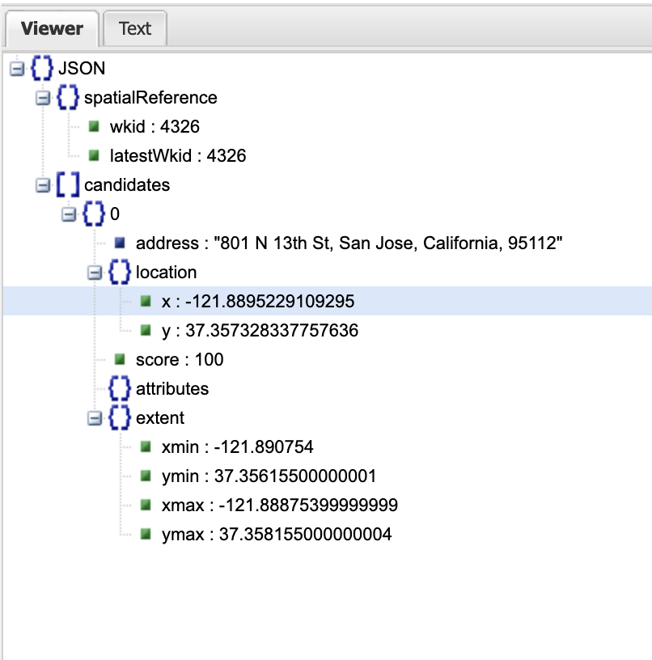
The Structure of JSON data
The structure of a JSON object is as follows:
- The data are in
key-valuepairs. - Commas , separate Data
objects. - Curly braces { } hold
objects. - Square brackets [ ] hold arrays of multiple
objects(this provides the ability to representone-to-many relationships between theobjects). - Each data
valueis enclosed with quotes "" if it is astring value, or without quotes if it is anumeric value.
Reading Our Returned JSON Data
If you track forward through the hierarchy of our returned JSON data, you will find that it contains:
- An
objectcalledspatialReference - And an
arraycalledcandidateswhich contains:- numbered
candidateobjects(there is only onecandidateobject, whose index is0( because we limited the number of results with&maxLocations=1, in theendpoint URL), which contains:- three
objects, one of which is namedlocation, which contains:- two
propertiescalledx&y, which contain the latitude & longitude coordinates we are interested in, inkey-valuepairs.
- two
- three
- numbered
To refer to the x, or longitude, propertiy we would use the following:
candidates[0].location.x
or:
"the property named x, of the object named location, which is the first object named [0] in the array called candidates" reading backwards from the property we are interested in.
We'll make use of this, later in OpenRefine, to extract the longitude & latitude coordinates from the JSON formatted data we get back from locator.stanford.edu
Bulk Geocoding with OpenRefine
Now it’s time to start up OpenRefine and use the URL we’ve just created to submit a Geocoding Request for each of our addresses.
Create a New OpenRefine Project
- Start OpenRefine by double-clicking the OpenRefine app
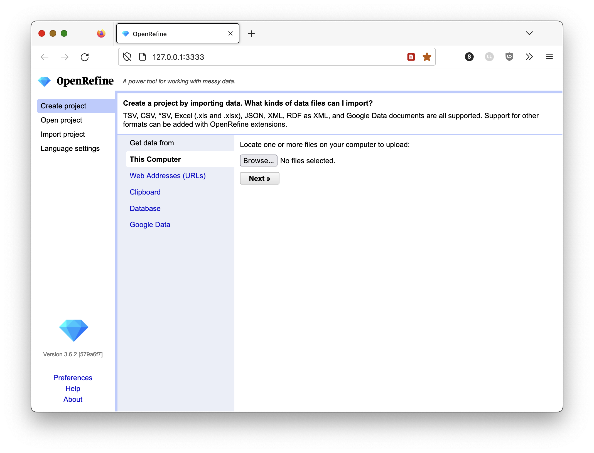
- Click on the Create Project link.
- Select the option to Get data from this computer and Click on the Choose Files button.
- Browse to the
SantaClara_TattooParlors.csvand Select it. Click Next - Make sure the data is properly formatted in the Preview, change the Parse data as... parameters until the data is properly formatted.
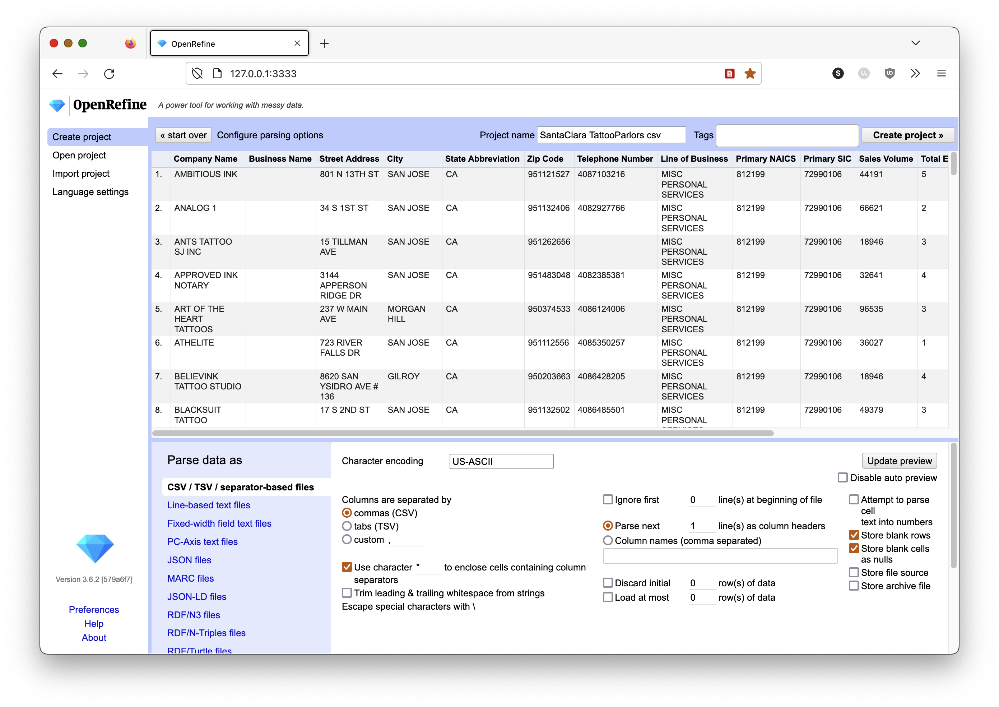
- Click Create Project in the upper right corner of the page.
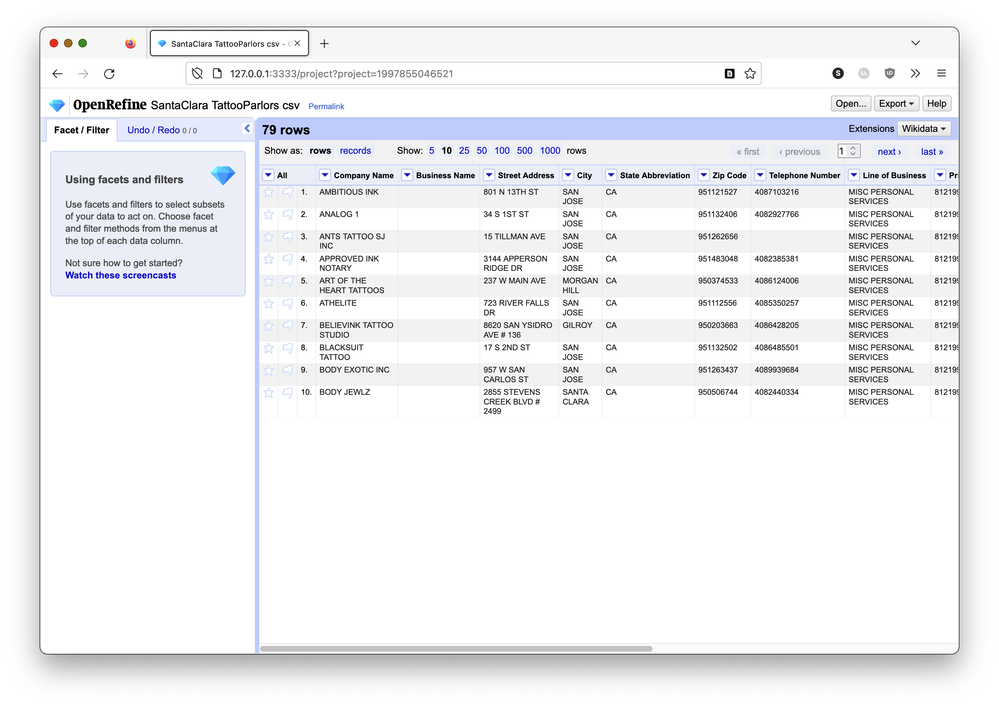
Note that the default for OpenRefine is to only show the first 10 records in your table. You can click on the Show: option, to show the number of records you want to see.
Spend some time exploring the interface. It's beyond the scope of this exercise to explore all of the functionality in OpenRefine, but it's worth you time to learn. A great resource for more exploration of OpenRefine and it's capabilities, is datacarpentry.org's OpenRefine for Social Science Data
Using Our URL as a Template
If you haven’t already, now is a good time to take a look at the basics of the GREL (General Refine Expression Language) https://docs.openrefine.org/manual/expressions.
- Return to your URL you created, and Copy it from the Browser Address Bar, or your Text Editor. Again, it should be this:
https://locator.stanford.edu/arcgis/rest/services/geocode/USA/GeocodeServer/findAddressCandidates?Address=801+N+13TH+ST&City=SAN+JOSE&Region=CA&Postal=951121527&maxLocations=1&f=pjson
- Now Click on the Drop-down Arrow next to the
Street Addressfield and go to Edit Column>Add Column by Fetching URLs
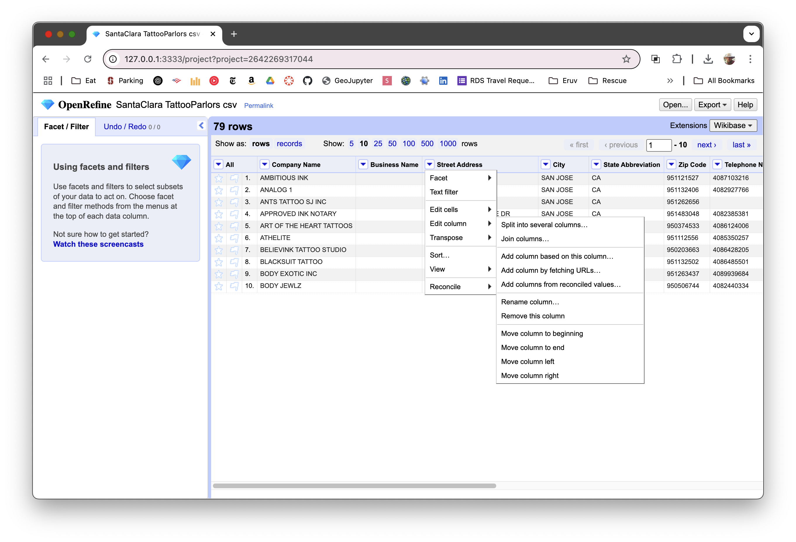
- Name the new column something like
locatorJSON - Paste your
endpoint URLinto the Expression Window (this will result in a error messages, which is fine)
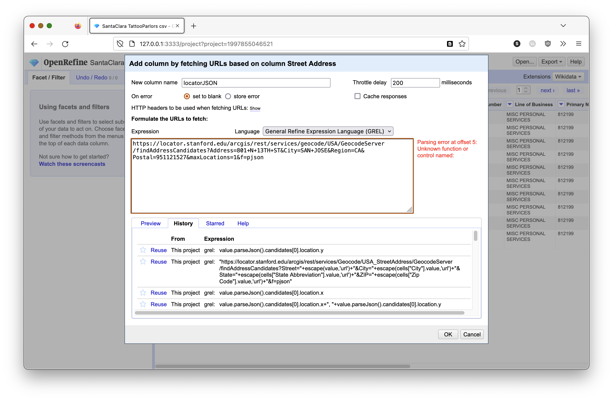
Replacing the Query Parameter Values with Data from the table
Because we started this Expression from the Street Address column, we only need to refer to the column values as value, and convert them to URL Encoded text.
- Now, Copy the following text:
"+ escape(value,'url')+"
- Carefully SELECT the following text from your
endpoint URLtemplate in the Expression window and replace it by pasting the text you just copied from above:
801+N+13TH+ST
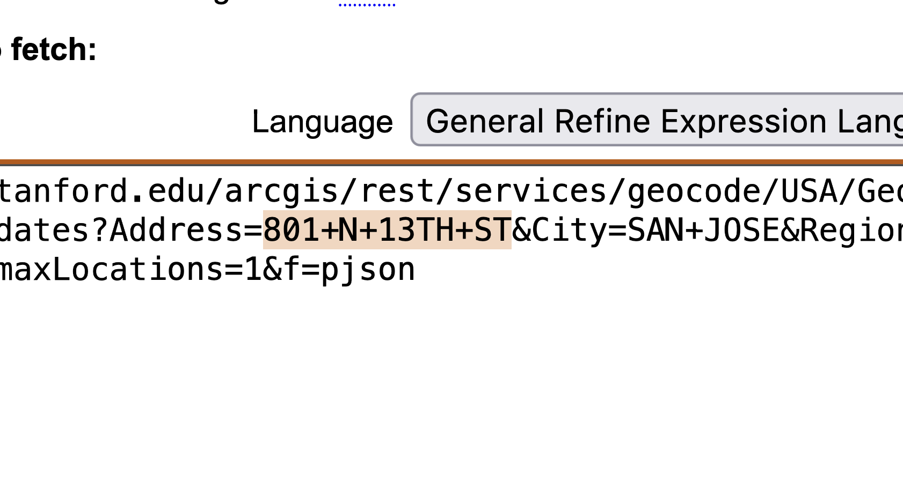
Calling Values from Other columns
To call the values from other columns into our expression, we need to tell OpenRefine, specifically, what columns we want to call. In GREL the cells object is used to call values from columns other than the one the Expression Editor was launched from. We'll use it do tell our endpoint URL template which columns to replace our query parameters with.
First, replace the &City= parameter value with the values in the City column:
- Copy the following text:
"+escape(cells["City"].value,'url')+"
- Carefully SELECT the following text from your
endpoint URLtemplate in the Expression window and replace it by pasting the text you just copied from above:
SAN+JOSE
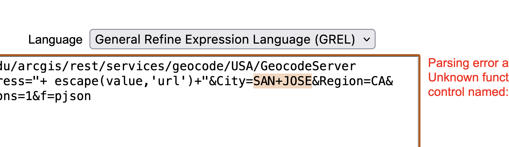
Next, replace the &Region= parameter value with the values in the State Abbreviation column:
- Copy the following text:
"+escape(cells["State Abbreviation"].value,'url')+"
- Carefully SELECT the following text from your
endpoint URLtemplate in the Expression window and replace it by pasting the text you just copied from above:
CA
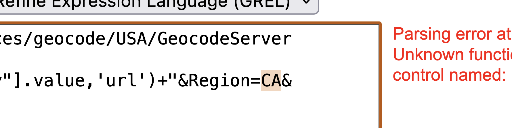
Finally, replace the &Postal= parameter value with the values in the Zip Code column:
- Copy the following text:
"+escape(cells["Zip Code"].value,'url')+"
- Carefully SELECT the following text from your
endpoint URLtemplate in the Expression window and replace it by pasting the text you just copied from above:
951121527
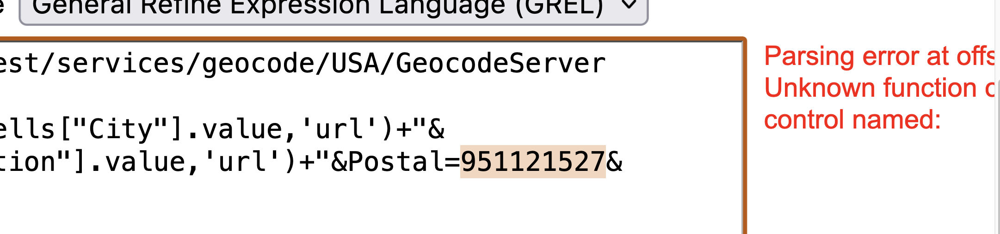
It's not necessary to replace the value for the &maxLocations= or &f= parameters, since they are the same for every query we run.
- Now, add double quotes (") to the beginning and end of the Expression and you should see any syntax errors dismissed.
Using the same highlighting conventions as above, you should have this:
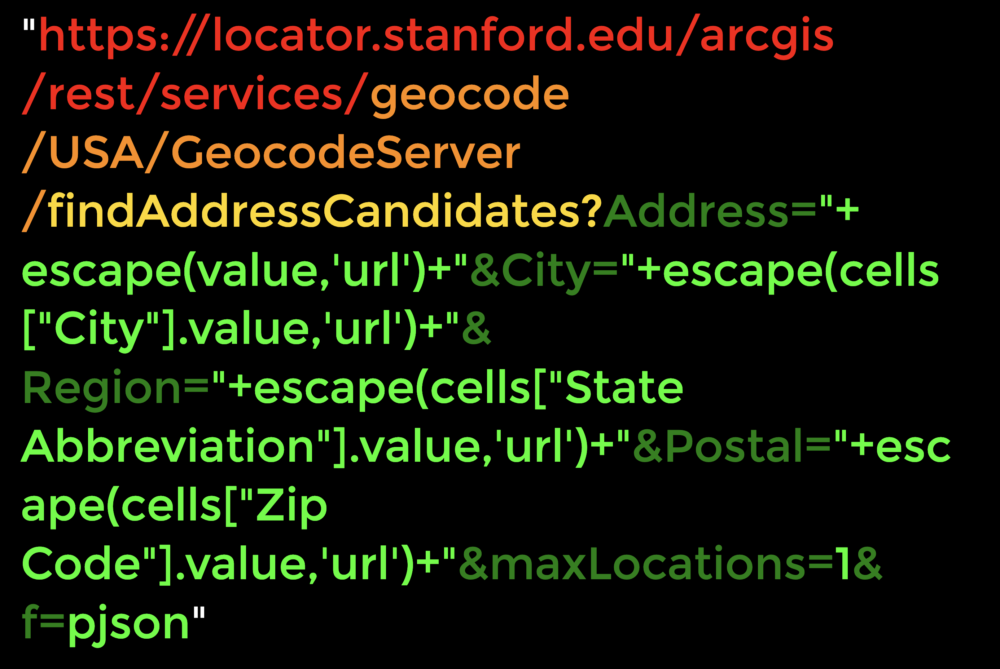
In the Preview Window, you should see the auto-generated endpoint URL with the contents of the columns called Street Address, City, State Abbreviation, and Zip Code inserted for each column.
Your first record should be identical to the original endpoint URL we started with, while the endpoint URL for the second record should have the values from it's own columns:
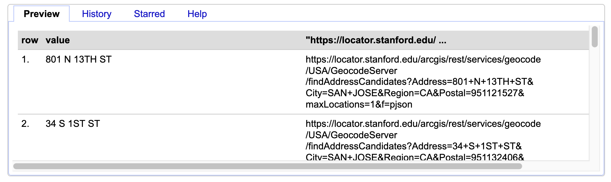
- Set the Throttle Delay value to
200milliseconds (this will tell OpenRefine to submit 5 Geocode Requests per second). - Uncheck:
Cache Responses
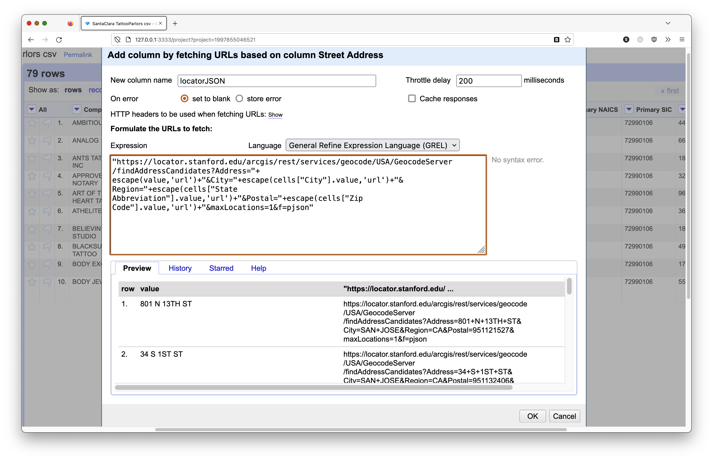
- Click OK to submit a custom
endpoint URLfor every record in yourSantaClara_TattooParlors.csvtable, once every 0.2 seconds.
Wait for the geocoding to finish (a few seconds, HOORAY FOR PROGRESS MESSAGES!) and you should have something like this:
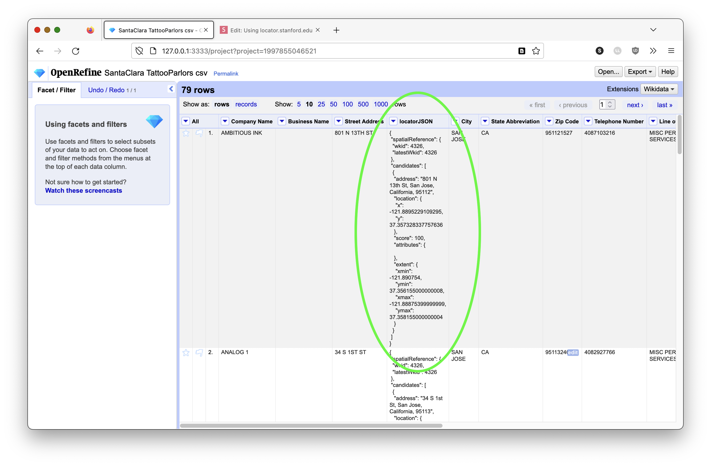
Parsing the Returned JSON Data for what you need
Note that the JSON response returned for the first record in the table should be identical to the JSON response we got in the browser, originally. Now we would like to use what we learned about the structure of JSON, earlier, to extract the Longitude & Latitude values we are interested in, into a new column.
Recall that:
"the property named x, of the object named location, which is the first object named [0] in the array called candidates"
or:
candidates[0].location.x
OpenRefine’s expression language has a function called parseJson(), that allows us to address objects and properties within JSON. We’ll use this to extract the exact value we are interested in and put them in new columns we can use to make a map!
- Click on the Drop-down Arrow next to the
locatorJSONfield and go to Edit Column>Add column based on this column...
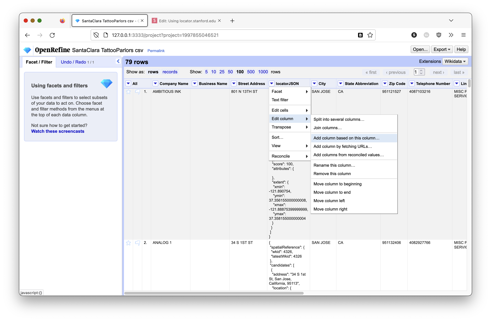
The function we want to use is parseJson()
and,
The Longitude coordinate is at: candidates[0].location.x
So, we want to:
"take the locatorJSON column's value, parse it as JSON, and access the candidate object's first, or [0], object, calling location's property x's' value"
or,
value.parseJson().candidates[0].location.x
- Cut&Paste the above GREL code, into the Expression Window
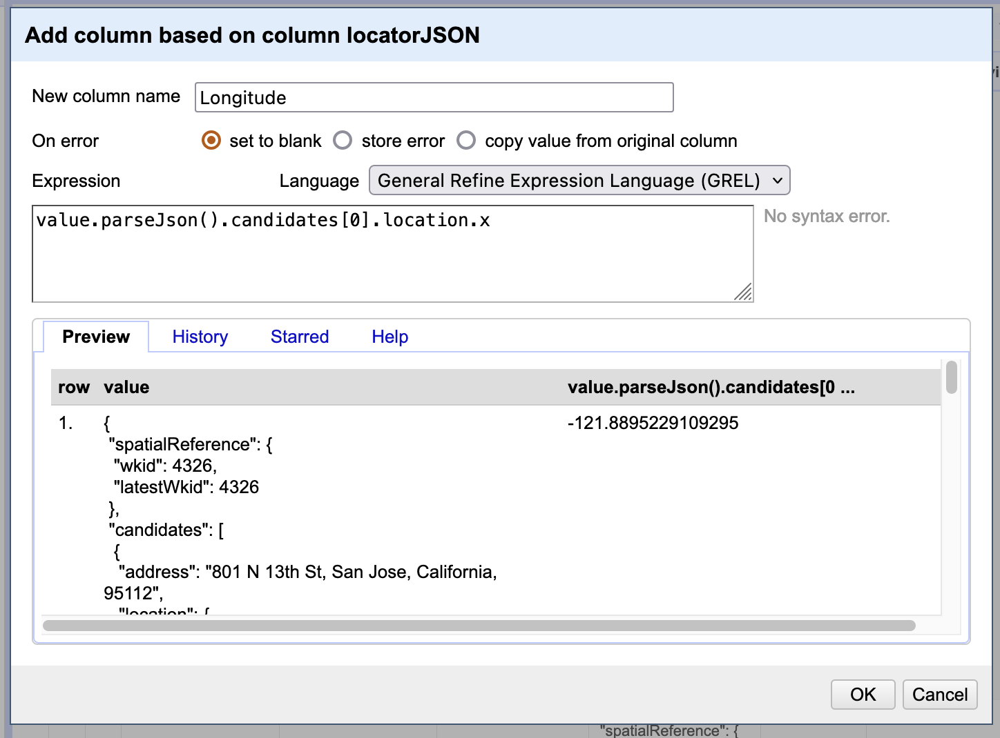
- Confirm that the value in the Preview Window is a valid longitude coordinate
- Name the new column
Longitudeand click OK to write the longitude coordinates to the new column.
( Note that in the image, below, I have used the >View>Collapse this column option to hide the rather large locateJSON column, to better display the new Longitude column.)
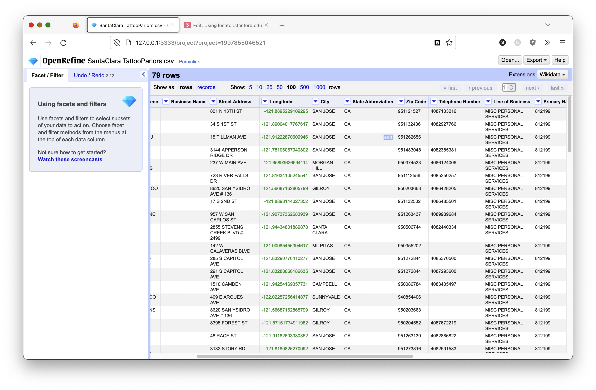
- Repeat the above to extract the
yvalues to a new column, namedLatitudeusing the following GREL expression:
value.parseJson().candidates[0].location.y
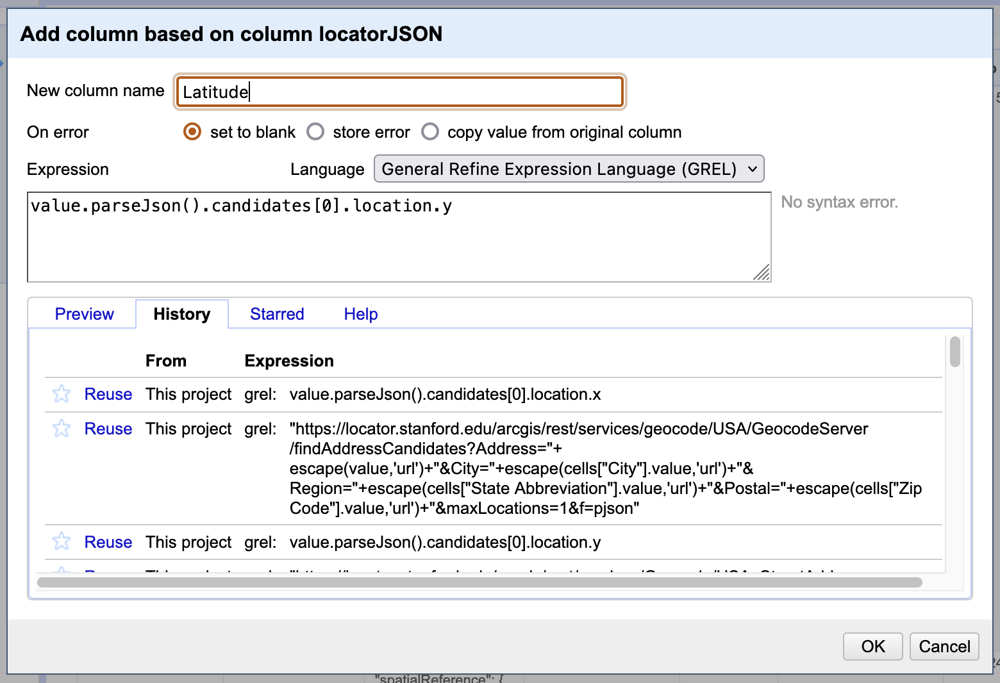
Note that there is an History tab in the OpenRefine Expression Window that you can find your previous expressions in and Reuse them as the basis for new queries
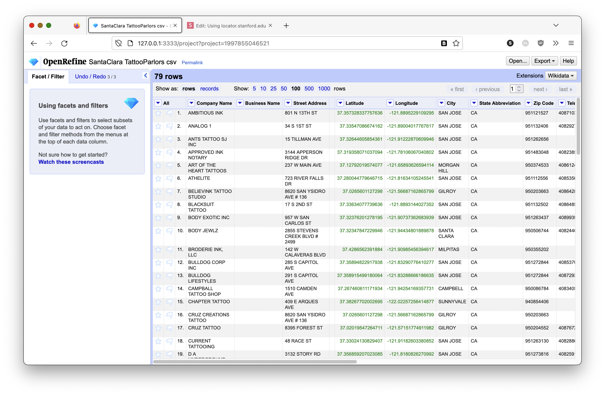
Cleaning up
You always want to make sure you received valid values for every record in your dataset. OpenRefine makes this easy with a built in facet function.
- Click on the drop-down arrow, next to your
LongitudeorLatitudecolumn, and go to >Facet>Text Facet - Scroll up and down through the resulting Facet/Filter panel that appears on the left side of OpenRefine, to confirm that all of the values in the column are valid coordinates.
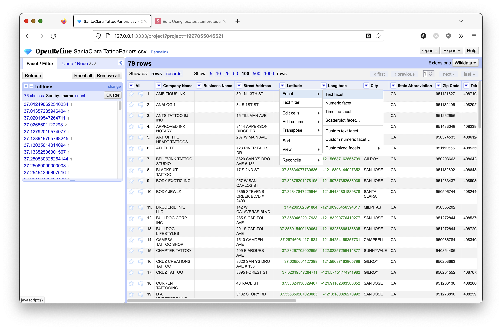
Deliverable
Submit the following for grading (confirm submission format on Canvas):
- Your final geocoded CSV exported from OpenRefine. The CSV should include the original address fields plus the new
LongitudeandLatitudecolumns. - A map layout exported as a PDF or image showing the geocoded points, appropriate cartographic elements, and labeled features as requested in the lab.
More Learning and API Links
Learning Links
How to Read API Documentation: https://www.departmentofproduct.com/blog/how-to-read-api-documentation/
datacarpentry.org's OpenRefine for Social Science Data: https://datacarpentry.org/openrefine-socialsci/
Additional APIs
OpenRefine.org: http://openrefine.org/
Geonames.org Geocoding API: http://www.geonames.org/export/geonames-search.html - An excellent, and free, global geocoding API, as well as other APIs.
Geolocate JSON Wrapper API Documentation: http://www.geo-locate.org/files/glcJSON.pdf - Maintained by Tulane University, this geocoding API can accept esoteric text-based localities, like those found in biological specimen collections (i.e.: when the collection location for a specimen is "5 miles north of Stanford, CA")
Google Geocoding API: https://developers.google.com/maps/documentation/geocoding/
Google Directions API: https://developers.google.com/maps/documentation/directions/
Google Elevation API: https://developers.google.com/maps/documentation/elevation/
Online JSON Viewer: http://jsonviewer.stack.hu/
U.S. Census Data API: https://www.census.gov/data/developers/guidance/api-user-guide.html